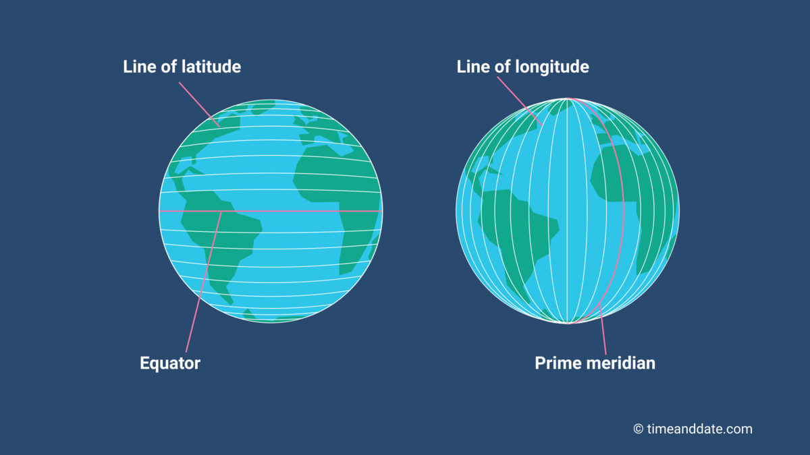

Learning geospatial data science is crucial in today’s data-driven world for several reasons. Geospatial data science enables individuals to understand and analyze complex spatial phenomena, including natural disasters, urbanization, climate change, and environmental degradation. By gaining familiarity with geospatial analysis techniques, individuals can gain insights into spatial patterns, relationships and processes, which is essential for making informed decisions.
Moreover, geospatial data science provides valuable skills and knowledge that are highly relevant across various domains and industries. From urban planning and environmental management to public health and disaster response, proficiency in geospatial data science opens up diverse career opportunities and enhances professional development prospects.
Additionally, learning geospatial data science fosters critical thinking, problem-solving, and interdisciplinary collaboration skills. It requires learners to integrate spatial data from multiple sources, apply statistical and computational methods, and communicate findings effectively to diverse stakeholders.
Furthermore, as the availability and complexity of geospatial data continue to grow with advancements in technology and data collection methods, the demand for skilled geospatial data scientists is expected to rise. Therefore, investing in learning geospatial data science equips individuals with valuable skills that are not only relevant today but also increasingly essential for future career success.
Folium
Folium is a Python library used for visualizing geospatial data interactively on web maps. Leveraging the capabilities of Leaflet.js, Folium allows users to create maps directly within Python code, making it an accessible and powerful tool for geospatial visualization and analysis.
With Folium, users can create various types of interactive maps, including point maps, choropleth maps, heatmaps, and vector overlays, by simply specifying geographic coordinates and map styling options. The library provides intuitive APIs for customizing map features such as markers, popups, tooltips, legends, and map layers, enabling users to create visually appealing and informative maps with ease.
Folium integrates with other popular Python libraries such as Pandas and Matplotlib, allowing users to visualize geospatial data stored in DataFrame objects or plot data directly onto Folium maps. It also supports various tile providers and basemaps, enabling users to choose from a wide range of map styles and sources.
Creating Interactive Maps in Folium
Creating maps with folium is straightforward. We simply pass the latitude and longitude of the point of interest (POI) and specify a zoom level. We can then drop a marker on the point of interest, and interact with the map however we’d like.
We can get the latitude and longitude for a given POI by performing a google search. Latitude ranges from -90 to 90 degrees, longitude from -180 to 180 degrees. The latitude and longitude for the DMACC Ankeny campus is (41.5996, -93.6276), which is (latitude, longitude). Note that for US coordinates, the longitude will always be negative. An illustration is provided below:

img01
To illustrate, let’s render a map over the park I used to play at as a child (Durkin Park on the southwest side of Chicago). Note that zoom level provides more detail as the number gets larger. A zoom level of 4 would show the entire US; a zoom level of 17 would render roughly a city block:
import folium# Latitude and longitude for Durkin Park, 84th & Kolin Ave, Chicago IL. lat =41.739lon =-87.729zoom =18m = folium.Map(location=[lat, lon], zoom_start=zoom)folium.Marker(location=[lat, lon]).add_to(m)m
Make this Notebook Trusted to load map: File -> Trust Notebook
A few things to note about the code used to render the map:
We start by importing the folium library.
The lat/lon for Durkin Park was obtained by a simple google search.
I used a level 18 zoom but this is not necessary since the map is dynamic and can be resized.
To add the marker to the map, we call .add_to(m).
We included m by itself in the last line of the cell in order for the map to render. Without doing this, the map would not display.
We can change the color of the marker by passing an additional argument into folium.Marker. I’ll place a second marker in another park I used to visit when I was younger, Scottsdale Park. I’ll make this second marker red.
# Durkin Park coordinates.lat0 =41.739lon0 =-87.729# Scottsdale Park coordinates. lat1 =41.7416lon1 =-87.7356# Center map at midway point between parks.mid_lat = (lat0 + lat1) /2mid_lon = (lon0 + lon1) /2# Specify zoom level. zoom =16# Initialize map.m = folium.Map(location=[mid_lat, mid_lon], zoom_start=zoom)# Add Durkin Park marker.folium.Marker( location=[lat0, lon0], popup="Durkin Park", ).add_to(m)# Add Scottsdale Park marker.folium.Marker( location=[lat1, lon1], popup="Scottsdale Park", icon=folium.Icon(color="red") ).add_to(m)m
Make this Notebook Trusted to load map: File -> Trust Notebook
Notice that the popup argument was supplied to folium.Marker. Now when we click on the markers, whatever text we supply to popup will be shown on the map.
We can connect the markers in the map by using folium.PolyLine. We pass it a list of lat/lon pairs, and it draws a line connecting the points. Let’s connect the two parks with a green line:
# Durkin Park coordinates.lat0 =41.739lon0 =-87.729# Scottsdale Park coordinates. lat1 =41.7416lon1 =-87.7356# Center map at midway point between parks.mid_lat = (lat0 + lat1) /2mid_lon = (lon0 + lon1) /2# Specify zoom level. zoom =16# Initialize map.m = folium.Map(location=[mid_lat, mid_lon], zoom_start=zoom)# Add Durkin Park marker.folium.Marker( location=[lat0, lon0], popup="Durkin Park", ).add_to(m)# Add Scottsdale Park marker.folium.Marker( location=[lat1, lon1], popup="Scottsdale Park", icon=folium.Icon(color="red") ).add_to(m)# Connect parks with green line. points = [(lat0, lon0), (lat1, lon1)]folium.PolyLine(points, color="green").add_to(m)m
Make this Notebook Trusted to load map: File -> Trust Notebook
One final point: We can replace the standard markers with circle markers by using folium.CircleMarker. radius controls the size of the markers and color/fill_color set the color of the marker:
m = folium.Map(location=[mid_lat, mid_lon], zoom_start=zoom)# Add Durkin Park circle marker.folium.CircleMarker( location=[lat0, lon0], radius=7, popup="Durkin Park", color="red", fill_color="red", fill=True, fill_opacity=1 ).add_to(m)# Add Scottsdale Park marker.folium.CircleMarker( location=[lat1, lon1], radius=7, popup="Scottsdale Park", color="red", fill_color="red", fill=True, fill_opacity=1 ).add_to(m)# Connect parks with green line. points = [(lat0, lon0), (lat1, lon1)]folium.PolyLine(points, color="green").add_to(m)m
Make this Notebook Trusted to load map: File -> Trust Notebook
The International Space Station (ISS) is a collaborative effort among multiple nations, serving as a hub for scientific research and international cooperation in space exploration. The ISS orbits the Earth at an astonishing speed of approximately 17,500 miles per hour, completing an orbit around the planet approximately every 90 minutes.
The coords list in the next cell represents the position as latitude-longitude pairs of the ISS sampled every minute for 20 minutes. We can render each of the 20 points as red circle markers connected by a red dashed line. Note that it is not necessary to call folium.CircleMarker 20 times: Use a for loop to iterate over the coords list.